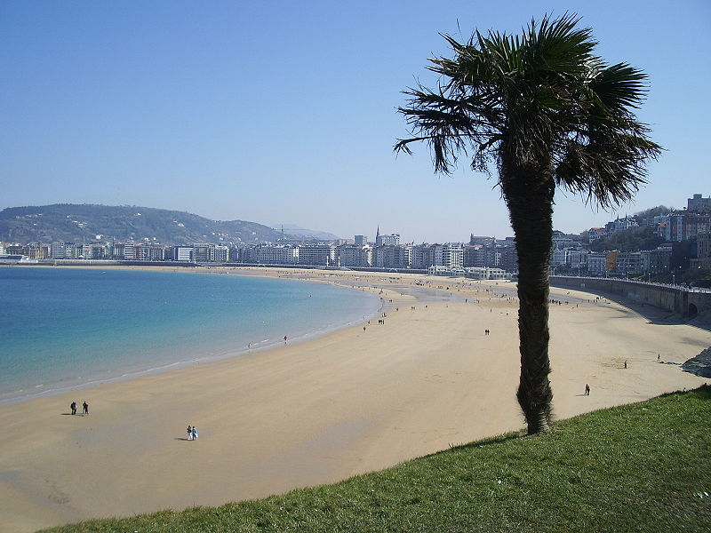

¿Sabes cual de estas 2 playas tiene mayor longitud?

Playa de la Barceloneta
Muy mal!!! Es una de las más largas con una longitud de 1100 metros. Junto con la de San Splaya cercana) es una de las más antiguas y de mayor tradición de la ciudad y también una de las preferidas por los usuarios extranjeros. Mientras que la playa de La Concha tiene una longitad de 1350m.
Playa de La Concha
Muy bien!!! Ubicada al oeste de la desembocadura del río Urumea, separada del mismo por el monte Urgull y alojada en la bahía de la Concha, tiene una longitud media de 1.350 m, una anchura media de 40 m y una superficie media de 54.000 m². Mientras que la playa de la Barceloneta tiene una longitud de 1100m.
¿Sabes que oceano es mas profundo?
Ocenao Pacífico
Muy bien!!! El océano Pacífico es el mayor océano de la Tierra. Tiene una profundidad máxima de 10.924m (Abismo Challenger en la Fosa de las Marianas). Ocupa la tercera parte de su superficie y se extiende aproximadamente 15 000 km desde el mar de Bering limitando con el Ártico por el norte, hasta los márgenes congelados del mar de Ross y limitando por el sur con la Antártida. Mientras que el oceano Atlantico tiene una profundidad de Máxima: 8 605 m (fosa de Puerto Rico).
Oceano Atlántico
Muy mal!!! El océano Atlántico es el océano que separa América, al oeste de Europa y África, al este. Tiene una profundidad maxima de 8 605 m (fosa de Puerto Rico). Se extiende desde el océano Ártico, en el norte, hasta el océano Antártico, en el sur. Es el segundo océano más extenso de la Tierra tras el océano Pacífico. Mientras que el oceano Pacífico tiene una profundidad máxima de 10.924m
¿Sabes que país tiene mas superficie?
Reino Unido
¡Muy bien! El Reino Unido, denominado oficialmente Reino Unido de Gran Bretaña e Irlanda del Norte (United Kingdom of Great Britain and Northern Ireland),con una superficie de 243 610km² es un país soberano e insular, miembro de la Unión Europea,nota 1 ubicado al noroeste de la Europa Continental. Mientras que Rumania tiene 238 391 km2.
Rumania
¡Muy mal! Rumania es un país ubicado en la intersección de Europa Central y del Sureste, en la frontera con el mar Negro. Rumania limita con Hungría y Serbia al oeste, Ucrania y Moldavia al noreste y al este, y Bulgaria al sur. Con una superficie de 238 391 km2. Mientras que el Reino unido tiene 243 610km².
¿Sabes que ciudad tiene mas población metropolitana?
Seúl
¡Muy Bien!Seúl, pronunciado: [sʌ.ul], oficialmente Ciudad Especial de Seúl, es la capital de Corea del Sur desde la creación de esta república en 1948, la capital histórica de Corea desde hace más de 600 años y la ciudad más poblada de la península de Corea. Tiene una población metropolitana de 25.620.000 habitantes. Situada al noroeste del país, a unos 50 kilómetros de la zona desmilitarizada que separa las dos Coreas, forma una unidad administrativa propia dentro del Estado. Está atravesada por el río Han.Mientras que la ciudad de Bombay tiene 20.654.359 habitantes.
Bombay
¡Muy mal! Bombay, también conocida bajo la forma local Mumbai y actualmente el nombre oficial en inglés desde 1995, es la capital del estado federal de Maharashtra en la India. Es la ciudad portuaria más importante del subcontinente con cerca del 40 % del tráfico exterior del país. Tiene una población metropolitana de 20.654.359 habitantes.
¿Sabes que lago es mas grande?
Lago Hurón
¡Muy bien! El lago Hurón (en inglés: Lake Huron)? es el segundo lago en tamaño de los cinco conocidos como Grandes Lagos, y se halla en la zona central de Norteamérica, entre Estados Unidos y Canadá y tiene una superficie de 59.596 km². Mientras que el Lago Míchigan tiene una superficie de 57.750 km².
Lago Míchigan
¡Muy mal! El lago Míchigan es el único de los Grandes Lagos que se encuentra completamente dentro del territorio de los Estados Unidos; los otros están compartidos con Canadá. Con 57.750 km², una superficie similar a la de Croacia, es el mayor lago perteneciente a un único país y el quinto a escala mundial. Mientras que el lago Hurón tiene una superficie de de 59.596 km².
¿Sabes que volcan es mas alto?
Cerro Bonete Chico
¡Muy mal! El Cerro Bonete Chico (a veces llamado cerro Bonete) es un volcán apagado en el noroeste de la Provincia de La Rioja, cerca del límite con la Provincia de Catamarca, en la República Argentina. Forma parte del hemiciclo de los volcanes más altos del mundo compuesto por Veladero, Baboso, Reclus, Gemelos, Pissis, Peñas Azules y Bonete Grande, midiendo 6759m. Mientras que el volcan de Monte Pissis tiene una altitud de 6795m.
Monte Pissis
¡Muy bien! El monte Pissis es un estratovolcán inactivo, situado sobre un ramal de la Cordillera de los Andes dentro de la región del altiplano puneño de la Argentina, ubicado entre las Provincias de La Rioja y Catamarca. Este volcán es la tercera cumbre de mayor altura de los hemisferios Sur y Occidental, con una altitud de 6795m. Mientras que el volcan Cerro Bonete Chico tiene una altitud de 6759m.
¿Sabes que país tiene mayor area de bosque?
Canadá
¡Muy bien! Canadá es un país soberano de América del Norte, cuya forma de gobierno es la monarquía parlamentaria federal. Su territorio está organizado en diez provincias y tres territorios. Su capital es la ciudad de Ottawa y la ciudad más poblada es Toronto. Con un area de bosque de 347.069 miles de hectareas. Mientras que Estados Unidos tiene un area de bosque de 310.095 miles de hectareas.
Estados Unidos
¡Muy mal! Estados Unidos, oficialmente Estados Unidos de América es un país soberano constituido en república federal constitucional compuesta por 50 estados y un distrito federal. La mayor parte del país se ubica en el centro de América del Norte y tiene un area de bosque de 310.095 miles de hectareas. Mientras que Canadá tiene un area de bosque de 347.069 miles de hectareas.
¿Sabes que rio es mas largo?
Rio Amazonas
¡Muy bien! El río Amazonas es un río de América del Sur, que atraviesa Perú (nacimiento), Colombia y Brasil (desembocadura). Es el río más caudaloso del mundo y contiene más agua que el Nilo, el Yangtsé y el Misisipi juntos, y supone cerca de una quinta parte del agua dulce en estado líquido del planeta con una longitud de 7062km. Mientras que el Nilo tiene una longitud de 6853km.
Rio Nilo
¡Muy Mal! El Nilo es el mayor río de África y fue considerado durante siglos el río más largo del mundo, sin embargo, mediciones de los años 2007 y 2008 han redefinido el nacimiento del río Amazonas. La fuente más lejana del lago Victoria es el río Kagera, localizado al oeste de Tanzania. Si se considera este como fuente del Nilo, su nacimiento sería el curso de agua más largo de los que desembocan en el Mediterráneo, siendo el Nilo-Kagera el segundo río más largo del mundo, con una longitud de 6853km. Mientras que el rio Amazonas tiene una longitud de 7062km.
¿Sabes cual es la capital de Zambia?
Harare
¡Muy mal!Harare (denominada Salisbury hasta 1982) es la ciudad más poblada y capital de Zimbabue. Tiene una población estimada de 1.600.000 habitantes, con unas 2.800.000 personas en su área metropolitana (2006). Es el centro administrativo, comercial, y de comunicaciones de Zimbabue. Es centro de comercio para el tabaco, maíz, algodón y cítricos. Mientras que Lusaka es la capital de Zambia.
Lusaka
¡Muy bien! Lusaka es la capital de Zambia, de la provincia de Lusaka y del distrito homónimo, además de la ciudad más poblada del país. Está localizada en la zona centro-sur de Zambia, sobre una meseta a 1279 metros de altitud. Fue fundada como ciudad colonial en 1905 sobre un poblado preexistente. Mientras que Harare es la capital de Zimbabue.
¿Sabes que polo es mas frio?
Polo Norte
¡Muy mal!El polo norte, también conocido como polo norte geográfico es uno de los dos lugares de la superficie de un planeta coincidente con el eje de rotación; es opuesto al polo sur. Todos los cuerpos celestes poseen un polo norte y otro sur cuyo eje de rotación no suele ser perpendicular al eje de traslación. Con una temperatura mínima registrada de -70 grados centígrados. Mientras que en el Polo Sur la temperatura mínima registrada es de -89,6 grados centígrados.
Polo Sur
¡Muy bien! El término polo sur se refiere normalmente al polo sur geográfico, el punto más austral de la superficie terrestre, el opuesto al polo norte. Otros «polo sur» incluyen el polo sur ceremonial, el polo sur magnético y geomagnético, y el polo sur de inaccesibilidad. Con una temperatura mínima registrada de -89,6 grados centígrados. Mientras que en el Polo Norte la temperatura mínima registrada de -70 grados centígrados.